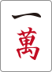
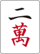
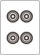
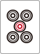
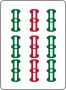
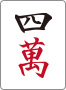
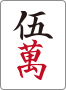
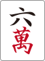
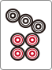
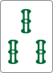

📖 使い方ガイド
麻雀 何切るメーカー — はじめての方へ
1. このアプリでできること
「麻雀 何切るメーカー」は、配られた手牌から最善の一手を選ぶトレーニングをするためのクイズアプリです。手牌を見て切る牌を選び、解説を読みながら判断力を鍛えます。
アプリは大きく分けて2つの役割で構成されています。解く側と作る側を行き来して使います。
2. 問題の解き方
問題を解くにはホーム画面（nankiru.html）から始めます。以下、画面ごとに見ていきます。
2-1. ホーム画面の見かた
ホーム画面には次の要素が並んでいます。
- ログイン状態バー: 画面上部に「未ログイン（ローカルモード）」または、ログイン中はユーザー名／メールが表示されます。ログイン中は ログアウト ボタンも並びます。
- 登録問題数: 「○○ 問登録済」と表示されます。0問のときは下のボタンが押せません。
- 問題一覧: タグで絞り込みながら、好きな問題から始めるモード。
- ランダム挑戦: 登録された問題からランダムに最大20問を出題するモード。
- ⚙ 問題管理: 問題を作成・編集する画面に移動します（次の章で説明）。
- 📖 使い方ガイド: このページ（マニュアル）を開きます。
- Googleでログイン: 任意。ログインしなくてもローカルモードで遊べます（後述）。
2-2. 2つの挑戦モード
| モード | こんなときに | 特徴 |
|---|---|---|
| 問題一覧 | テーマを絞って練習したい | タグ（例: 「序盤」「七対子」など）で絞り込み、問題プレビュー（ドラ・手牌）を見ながら好きな問題を選べます。 |
| ランダム挑戦 | 実力試し・通しで解きたい | 登録問題からランダムに最大20問を連続出題。最後にスコア結果が表示されます。 |
2-3. 問題の3つのタイプ
このアプリには問題の出題スタイルが3種類あります。タイプによって答え方が少し変わります。
A. 通常の何切る問題
14枚の手牌から、切る牌を1枚クリックして答えるシンプルなタイプです。










手牌13枚＋ツモ牌1枚（少し離れた1枚）から切る牌を選ぶイメージ
B. リーチ判断つき問題
テンパイしている手牌で、まず リーチ か ダマ を選び、続けて切る牌を選びます。リーチかダマかの判断と打牌の両方が合っていれば正解です。
C. 鳴き判断問題（チー / ポン / カン）
相手から牌が出た場面で、まず チー / ポン / カン / スルー を選びます。鳴いた場合はその後、切る牌も選びます。
- 来牌（相手が出した牌）が画面上部に表示されます。
- 選べるアクションのボタンだけが表示されます（鳴けない場合 スルー のみ）。
2-4. 画面に表示される情報の読み方
| 表示 | 意味 |
|---|---|
| 局・自家風 | 例:「東1局 東家」。場の状況を示します。問題に設定されている場合のみ表示。 |
| ドラ表示牌 | その局のドラを示す牌。複数枚（カンドラ含む）出ることもあります。 |
| 巡目 | 現在の手番が何巡目か。「点棒状況」などと合わせて判断材料になります。 |
| 条件メモ | 「アガリトップ」「ラス目」など、問題作成者が補足した条件です。 |
| シャンテン数 | 解答後に表示されるバッジ。テンパイ または Nシャンテン と出ます（数字が小さいほどアガリに近い）。 |
2-5. 解答後のフィードバック
牌を選ぶと、すぐに正誤と解説が表示されます。
- 正解 / 不正解バッジ: 緑の「正解！」または赤の「不正解」が出ます。
- 解説文: 問題作成者が書いた打牌の理由。読み進める価値があります。
- シャンテン数の変化: その打牌の結果、何シャンテンになるか。
- 受け入れ牌: 切ったあとに有効な牌（ツモれば手が進む牌）が登録されていれば一覧表示されます。
- 出典: 出典が登録されている問題は下部に表示されます。
2-6. 結果画面と復習
ランダム挑戦モードや問題一覧をひと通り終えると、結果画面に切り替わります。
- スコア（正解数 / 出題数）が表示されます。全問正解時はお祝いメッセージが出ます。
- 間違えた問題は一覧で振り返ることができます。
- 再挑戦ボタンはモードによって名称が変わります。ランダム挑戦時は もう一度、問題一覧から始めた場合は 問題一覧に戻る。ホームへ で最初の画面に戻ります。
3. 問題の作り方
問題を作るには、ホーム画面の ⚙ 問題管理 リンクから「問題管理」画面（nankiru-admin.html）を開きます。
3-1. 問題管理の全体像
問題管理画面の上部には次のボタンが並んでいます。
| ボタン | 役割 |
|---|---|
| ＋ 新規問題を追加 | 編集フォームを開いて新しい問題を作成します。 |
| 出典・タグ管理 | 出典（問題の出どころ）とタグの一覧を整理する画面に移動します。 |
| JSON エクスポート | 登録済み問題をすべてJSONファイルでバックアップします。 |
| JSON インポート | JSONファイルから問題を取り込みます（既存データを上書きする確認が出ます）。 |
| 🧮 受け入れ枚数を一括再計算 | 登録済み全問題の受け入れ牌を再計算して保存します。手牌が14枚に満たない問題や鳴き問題はスキップされます。 |
問題一覧の各カードには 編集 と 削除 のボタンがあり、ドラッグで並び順を変えることもできます。
3-2. 新規問題の作成 — 5ステップ
＋ 新規問題を追加 を押すと編集フォームが開きます。基本の流れは次の5ステップです。
ステップ① 手牌・ドラ・副露の入力
編集フォームの上部には3つのタブがあります。下部の牌パレット（萬子・筒子・索子・字牌＋赤五）から牌を選んで、各タブに登録します。
- 手牌タブ: メインの手牌（鳴いていなければ13枚＋ツモ1枚 = 14枚）を入力。
- ドラ表示牌タブ: ドラ表示牌を最大4枚まで設定。
- 副露タブ: 鳴いた面子（チー・ポン・明槓・暗槓）を追加します。








手牌タブの例。金枠が「正解牌」としてマークされた牌
ステップ② 正解牌の指定
手牌タブで、切るべき牌（＝正解）を1枚クリックすると、その牌に金色の枠が付きます。これが解答時の正解牌になります。
ステップ③ 局情報の入力（任意）
必要に応じて場の状況を入力します。すべて任意なので、設定しなければ問題画面には表示されません。
- 局: 東1〜南4局を選択
- 家: 東家／南家／西家／北家
- 巡目: 1〜18のいずれか
- 条件メモ: 自由記述（例:「アガリトップ」「ラス目3000点差」など）
ステップ④ 解説と分類の入力
下部の解説セクションでは次の項目を入力します。シャンテン数や受け入れ牌は手牌から自動計算されるので、手で入力する必要はありません。
- 解説文: なぜその牌が最善かを記述するメインの本文
- 出典: ドロップダウンから選択。横の ＋ ボタンで新規出典をその場で追加できます。
- 出典メモ: 出典内のページ番号や日付など、補足情報
- タグ: チップ表示で複数選択可。テキスト入力 ＋ 追加 ボタンで新規追加、サジェストから既存タグを選んで追加もできます。
ステップ⑤ 保存
すべての入力が終わったら、フォーム下部の 保存する を押します。保存時に内容のチェック（バリデーション）が走ります。
- 手牌の合計枚数（副露含む）が14枚になっていない
- 正解牌が指定されていない／手牌に含まれていない
- 鳴き問題で正解アクションが未設定
3-3. 特殊な問題タイプの作り方
リーチ判断問題を作る
解説欄の下にある「リーチ/ダマ選択（任意）」のドロップダウンから 正解: リーチ または 正解: ダマ を選びます。（設定なし） のままにすれば通常の何切る問題のままです。選択すると、解答時に牌を選ぶ前のリーチ／ダマ判断ステップが追加されます。テンパイ手牌で出題する想定です。
鳴き判断問題（チー / ポン / カン）を作る
編集フォーム下部の チー/ポン/カン問題として設定する チェックボックスをONにすると、追加の入力欄が現れます。
- 来牌: 来た牌のコードを入力（例:
3m＝3萬、5p＝5筒、1z＝東）。プレビュー画像が自動表示されます。 - 来牌元ラベル: 任意（例:「上家から」「対面」）
- 選択可能なアクション: チー／ポン／カン／スルーから1つ以上にチェック
- 正解アクション: 上のうち、どれが正解かを選ぶ
- 正解がチーの場合: チーで使う手牌2枚をクリックで選択
- 正解がチーまたはポンの場合: 鳴いた後に切る牌を1枚選択
上下入れ替えて出題（数牌反転）
解説欄付近の 上下入れ替えて出題 チェックボックスをONにすると、出題時に数牌が反転されることがあります（1↔9, 2↔8, 3↔7…）。同じ問題を別の表情で出題できる小ワザです。
3-4. 副露（鳴き）の追加方法
副露タブで ＋ 副露を追加 を押すと、副露の種別を選ぶUIが開きます。
- 種別を選ぶ: チー / ポン / 明槓 / 暗槓
- 構成牌を選ぶ（牌パレットから）
- 鳴き元（横向きにする牌）は、ビルダー内に置いた牌をもう一度クリックして指定します
- 確定すると副露が登録される
3-5. タグと出典の管理
問題編集中はもちろん、独立した 出典・タグ管理 画面でもタグ・出典を整理できます。この画面では次のことができます。
- 出典・タグの新規追加
- 名前のリネーム（既存問題の表示名にも反映）
- 並べ替え（ドラッグ）
- 削除
3-6. 受け入れ牌は自動計算
切ったあとに有効な牌（ツモれば手が進む牌）は、手牌・正解牌・ドラなどから自動で計算されて解答後のフィードバックに表示されます。手で入力する必要はありません。
過去に登録した問題の受け入れ牌をまとめて更新したい場合は、問題管理画面ツールバーの 🧮 受け入れ枚数を一括再計算 を押してください。手牌が14枚に満たない問題や鳴き問題はスキップされます。
↑ 目次に戻る4. データの保存とログイン
4-1. ローカルモード（ログインなし）
ログインしなくてもアプリは使えます。ローカルモードでは、問題データはお使いのブラウザの localStorage に保存されます。
- 同じブラウザでアクセスする限りデータは残ります。
- 別のブラウザ・別のPC・スマホとの間でデータは共有されません。
- ブラウザのキャッシュ／サイトデータを削除するとデータも消えます。
4-2. Googleログイン
ホーム画面右上の Googleでログイン からログインすると、データをクラウド側に保存できます（管理者権限が必要な機能もあります）。複数の端末で同じ問題集を使いたい場合はログインを推奨します。
4-3. バックアップは JSON エクスポートで
問題管理画面の JSON エクスポート で、登録した問題をすべて1つのJSONファイルとしてダウンロードできます。このファイルは JSON インポート で復元できます。